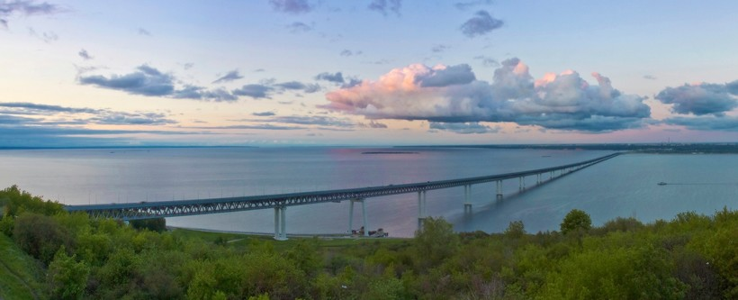
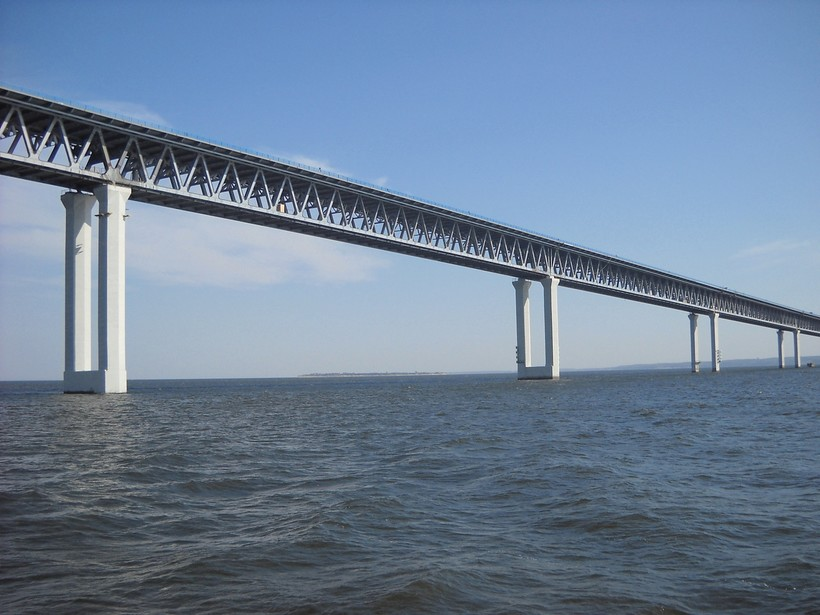

Императорский мост
Императорский мост, который также неофициально называют мостом Свободы, Ульяновским, Симбирским или просто «старым», был построен во времена правления последнего из российских императоров — Николая II — в 1913-1916 годах. Город в те времена именовался Симбирском, отсюда и пошло одно из названий моста.
Первоначально мост был железнодорожным, позже к нему пристроили автомобильные трассы. Императорский мост относится к балочным конструкциям. Он представляет собой 20 пролетов — полупараболических металлических строений со сквозными фермами из кованого железа с ездой понизу, а береговые пролетные строения длиной 60 см с ездой поверху. В настоящее время имеется две автомобильных и одна железнодорожная полоса. Несколько числовых фактов:
Пролет имеет длину 23,5 м.
Общая длина аркады — 557 м
Общая длина моста — 2080 м
Основной пролет составляет 158,5 м.
История Императорского моста в Ульяновске
Первоначально мост был исключительно железнодорожным и соединял Московско-Казанскую и Волго-Бугульминскую железные дороги, и в те времена считался величайшим в Европе. Идея строительства моста была выдвинута министром П. А. Столыпиным после его визита в Симбирск в 1910 году. Первое полное название моста – «Императорский Его величества Николая II» или же Николаевский. После свержения царской власти мост был переименован в 1917 году в «Мост Свободы», отсюда пошло второе название. Автором проекта стал Белелюбский Н.А., ему также содействовали Пшеницкого А.П., Маддисона О.А. В строительстве было задействован более 3,5 тысяч специалистов.
При строительстве возникали непредвиденные ситуации, такие как пожар в июле 1914 года, ущерб был оценен в 2 млн рублей, и оползень Симбирской горы в 1915 году. Однако, мост был восстановлен, и торжественное открытие было проведено 5 октября 1916 года.
В советский период мост не раз реконструировался. В 50-х годах из-за строительства Куйбышевского водохранилища и ГЭС уровень судоходного горизонта поднялся на 7—8 см, что привело к необходимости укрепить переход и опоры. Кроме того, одновременно была пристроена автомобильная часть моста, куда было перенесено железнодорожное движение на период реконструкции моста. В 1958 году было открыто движение по автомобильной части Императорского моста.
Последняя реконструкция была в 2003—2010 годах. Необходимость починки объяснялась «усталостью металла» и строительная компания «Мост» взялась за капитальный ремонт. Хотя официально считается, что мост полностью не закрывался, горожане помнят, что попасть с левобережья в центр города можно было только по расписанию.
Президентский мост
Последнее название Императорского моста — «старый» появилось в ноябре 2009 года вместе с открытием нового Президентского моста. Хотя «новый» имеет значительно меньше названий, а его возраст составляет всего 7 лет, долгая и непростая история у него уже имеется.
Прежде всего, Президентский мост— второй по длине на территории России. Надводная часть имеет длину 5824 метра, общая же длина — около 13 км, пролетов — 220 метров, вес — 4 тысячи тонн. Итоговая стоимость строительства составила 38,4 млрд рублей. Высота опор варьируется от 11 до 60 метров.

Президентский мост был построен для того, чтобы разгрузить уже существующий старый и обеспечить возможность его реконструкции, стал частью важного Ульяновского транспортного узла, положил начало новому автомаршруту в международном коридоре «Транссиб», а также способствовал улучшению транспортной системы города и области.
На подходах к мосту ширина полотна составляет 34,5 метра, высота опор у берегов может достигать 60 м, что равно высоте 16-этажного дома. 25 -метровый ярус состоит из автомобильной трассы, тротуаров по полтора метра и велодорожки шириной в 1 метр с полосами в обе стороны. Пешеходное движение по мосту запрещено. Однако, в отличие от Императорского Президентский мост предназначен для велосипедного движения, но остановки на мосту запрещены.

Ширина нижнего яруса — 13 метров. Первоначально планировался метромост, то есть по нижнему ярусу должен был пройти маршрут скоростного трамвая. В настоящее время об этом ничего не слышно, однако, было бы крайне интересно прокатиться.
Мост может рассматриваться как внегородская трасса, так как на въезде и выезде с моста имеются перечеркнутые таблички с названием города. Расчётная нагрузка моста — до 30 тысяч автомобилей в сутки, ограничение скорости в летний период – 90 км/ч, зимой – 60 км/ч. Также имеется ограничение по весу транспортных средств: максимальная масса — 80 тонн, максимальная нагрузка на ось — менее 11 тонн.